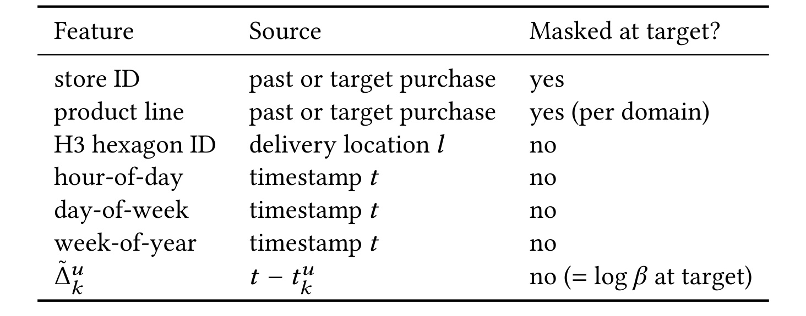
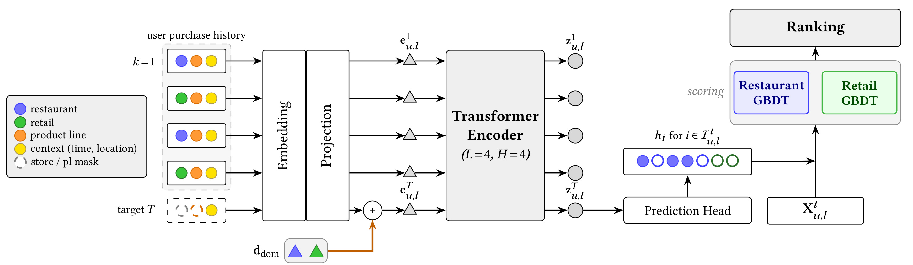
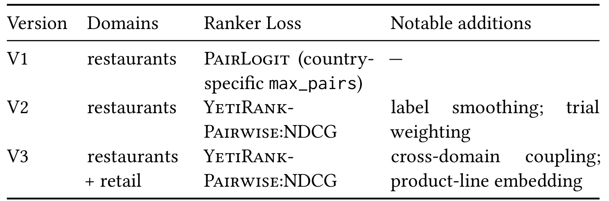
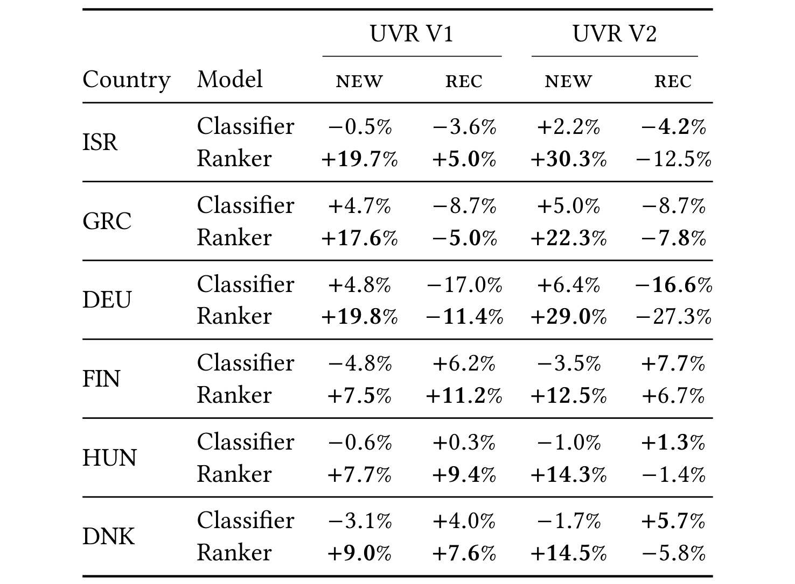
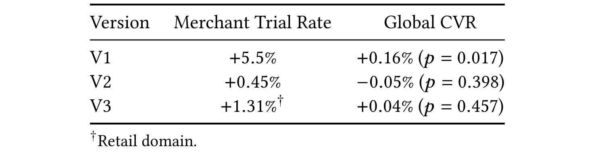
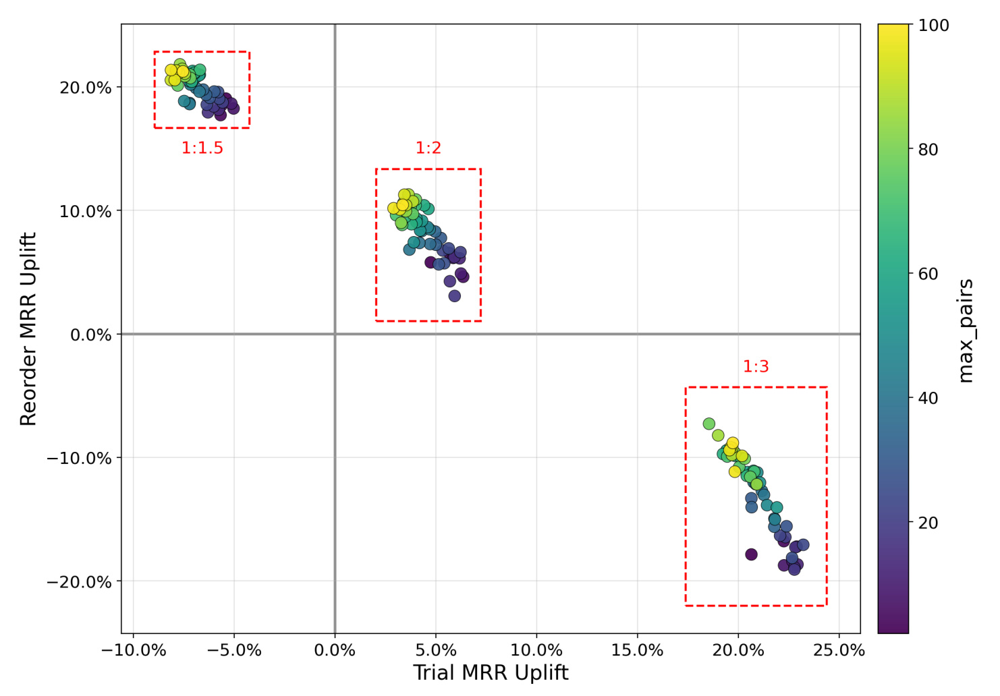
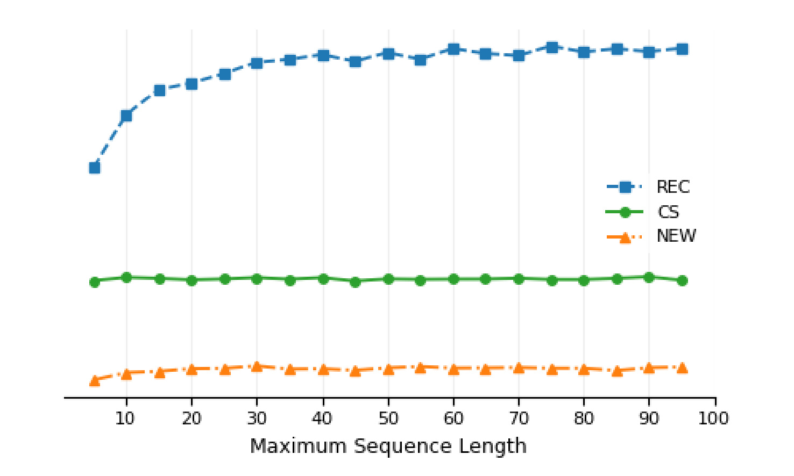

Wolt-UVR：在尝新与复购之间调节序列排序
Marcel Kurovski、Attila Nagy、Steffen Klempau 与 Aleksandr Fedintsev 来自 Wolt（DoorDash），在 2026 年 9 月 14 日公开 Balancing Trial and Reorder: A Hybrid Sequential Transformer–GBDT Ranker for On-Demand Delivery，中文可译为《平衡尝新与复购：面向即时配送的序列 Transformer 与梯度提升树混合排序器》。这是一篇生产推荐系统案例，论文入口为 arXiv:2609.16407，本次阅读版本为 v1；未核验到本文独立公开代码或数据集。UVR 是 Universal Venue Ranker 的缩写，其统一对象是国家内多个业务领域的建模与服务体系，并不意味着所有阶段只剩一个模型参数文件。
在配送平台上，候选店铺受到本地位置、实时营业与配送运营的共同约束；个性化排序的一项核心矛盾，是向用户展示尚未尝试的店铺，同时保留具有复购意图时的排序质量。
1. 背景和问题
1.1 尝新不是所有请求共同追求的目标
即时配送中的用户行为具有很强的重复性。一位用户可能在工作日午间反复选择同一家餐厅，却在周末希望寻找陌生店铺。平台若只学习购买概率，历史上熟悉且反复出现的商户会占据前排；如果过度奖励新商户，真正希望快速复购的人又可能找不到熟悉选项。论文把这对矛盾明确放在训练目标、分群指标和上线决策中，而不是用单一整体离线分数掩盖。这里的“尝新”指用户第一次向某家店下单，并不等于商家刚刚开业；“复购”指用户之前已经向该店下过单，也不意味着本次购买相同商品。它们是用户与商家的关系状态，必须根据请求发生之前的购买历史判断。
和视频、音乐推荐不同，配送候选本身具有强约束。即使模型认为某家餐厅很合适，如果用户当前地址超出配送范围，或店铺暂时打烊、运力不足、订单积压，这个结果也不能被推荐为可购买候选。作者把候选生成留在本文范围之外，将已有后端提供的可服务店铺集合视为排序输入。因而本文效果不能外推成召回层也获得改进，更不能把全国店铺分类头输出理解为最终直接向用户曝光全国商户。分类器在国家级词表上计算分数，实际排序仍受本地候选集合约束，这是后续架构中必须保留的两个不同集合。
用户冷启动又是第三类情况。一个从未下过单的新用户没有购买序列，但仍有请求时间、配送位置与当前业务入口。UVR 可以根据这些上下文形成先验分布，不过这和从历史兴趣中推断偏好不是同一件事。作者定义的冷启动属于“无购买历史的用户”；它既不等于完全没有曝光点击的用户，也不等于模型没见过的新商户。后者受到输出分类词表限制，需要依赖下游内容特征或下一次训练更新。把这两种冷启动混为一谈，会误读统一序列模型的覆盖能力。
1.2 任务定义决定了离线结果能说明什么
设用户为 $u$，店铺为 $i$，请求时间与位置为 $t,l$。历史购买序列按发生时间排序，取请求之前的部分，得到有序序列 $S_u^{<t}$ 及其中出现过的不同店铺集合 $I_u^{<t}$。论文把训练会话归一为恰好一次购买：
符号解释：$I_{u,l}^{t}$ 是此时可服务用户的候选店铺集合，$r_{u,i}^{t}$ 是用户在该会话是否向店铺购买的二值指示。没有购买的会话被去掉；若一个会话向多家店购买，只保留其中旧生产排序位置最靠前的那家作为正例，其余已购买店铺也被改为非购买。该规则使排序目标与训练格式清晰，但也引入选择偏差：学习任务是“已经购买的人买了哪家”，不是对全部访问用户预测是否购买；多购买归一化还继承了旧排序偏好。
符号解释：三种类型依次为用户首次购买、老用户尝试此前未买过的店、老用户复购。这里把原文分段定义中冷启动优先的判断顺序写成互斥条件，避免把无历史用户同时算作普通尝新。购买指示是三类共同前提；对未购买但点击的候选，下游采用简化的“是否属于历史店铺集合”关系，而不沿用这个仅针对购买事件的三分类。
离线指标主要是目标店铺排名倒数的平均值，也就是 MRR。它对第一位与第二位之间的变化很敏感，适合衡量已知购买目标是否靠前，但对整列覆盖、多样性和商家曝光公平性没有完整刻画。线上 Merchant Trial Rate 衡量首次向店铺下单的情况，Global CVR 则混合尝新、复购和用户冷启动会话。一个分群的离线 MRR 下降，并不必然让整体转化下降；反过来整体转化未显著变化，也不能证明复购用户没有受到损失。指标对应不同样本集合和不同问题，是理解论文结果而不是挑选有利数字的前提。
1.3 为什么采用混合架构
旧系统在餐厅领域包含基于神经协同过滤的首轮排序、结合内容与上下文的神经网络二轮排序，以及面向用户冷启动的树模型；零售领域另有一个树排序器。这样的分工能逐步积累业务知识，也带来不同模型之间的训练、更新和服务协调成本。UVR 选择让双向 Transformer 统一提取购买历史中的序列信号，再把每家候选店铺对应的一个 logit 交给树模型。树模型继续使用距离、价格、评分、商品丰富度和用户店铺交互等特征。序列编码负责历史依赖，树模型处理结构化业务信息，二者的优势被放在各自更容易发挥的位置。
这种设计的研究价值主要在生产约束下的组合与取舍，而不在重新发明注意力或提升树。对于维护成熟树模型的团队，加入一个可控的序列分数，常比整体替换排序器更容易分阶段验证，也更容易利用现有监控与回退机制。但论文并没有提供“去掉分类器 logit、其他条件完全不变”的消融，因此下游优于分类器不能被直接解释为每个组件都独立贡献了多少收益。序列、内容、标签、负样本、目标函数及模型容量共同变化，实验结论必须保留这种组合性质。
另一个关键价值是把业务偏好变成可调参数。本文没有宣称尝新和复购必然同时提升，而是利用购买类型加权和负样本数量移动工作点，并公开某些国家的复购退化。这样的披露使读者能够检查“统一”究竟简化了什么、收益由谁获得、代价落在哪个群体。对于跨域推荐和个性化系统，能否表达并验证这些取舍，比单个平均指标上升更有迁移意义。论文的现实边界也很明确：它报告企业内部日志与真实流量实验，数据量绝对值受到保密限制，外部读者可以复现机制，却无法直接重现相同数值。
2. 方法
2.1 序列分类器的输入与局部掩码
UVR 沿用双向编码器的掩码预测思想，但只把序列最新一次购买作为预测目标，不在任意历史位置随机挖空。预测时需要知道请求所处的时间、位置和领域，却不能提前知道最终店铺及其具体产品线。训练输入必须模拟这个信息边界，否则模型会利用目标属性泄漏取得虚假的高分。原文 Table 2 把允许保留和必须隐藏的字段直接列出。

这张表的第一列列举六个类别字段和一个连续时间字段，第二列说明这些信息来自购买事件还是当前请求，第三列标识目标位置是否掩码。店铺编号是预测标签，必须隐藏；产品线也必须隐藏，因为系统按餐厅或零售领域接受请求，而不预先知道用户最终选中的具体产品线。相反，配送地址的地理网格、小时、星期和年内周序号在发起请求时已经可见，不需要隐藏。对历史位置，店铺和产品线都是真实已发生事件的信息，保留它们不会泄漏目标。判断依据应是信息在服务时是否存在，而不是所有目标位置字段都机械设为空。
地理表示采用八级 H3 六边形网格，原文给出的平均面积约为零点七四平方公里。离散网格让同一区域的请求共享参数，并避免直接输入连续经纬度，但也使未出现过的网格面临词表覆盖问题。时间间隔来自每次历史购买到当前请求的距离，不仅表达事件先后，还区分昨天购买与数月前购买。目标位置的间隔为零，变换后成为固定偏置，而不是额外的用户识别信息。表中连续特征的“无需掩码”因此不应理解为它提供了未知的购买时间。
另一个容易忽略的事实是，冷启动用户和老用户在相同位置、相同时刻可能具有完全相同的目标上下文。模型靠有没有历史位置区分两者，而不是靠目标时间或地理字段自行识别新用户。实现时还必须把左侧补零位置排除在注意力之外，否则补齐长度会被当作真正购买历史。表格没有展示实时点击与停留信息，它们也不进入本文序列编码器；点击只在后面的树模型标签构造中发挥作用。因此“会话感知”主要体现为请求上下文结合历史购买，而不是完整建模当前会话内的每一步即时交互。
符号解释：$t_k^u$ 是第 $k$ 次历史购买时间，$t-t_k^u$ 是距离当前请求的时间差，$\alpha,\beta$ 控制尺度与平移，取对数缓和跨度很大的时间差；目标位置取值为 $\log\beta$。这些参数的具体生产取值未在所读正文中完整提供，复现时不能把任意默认值说成论文配置。
符号解释：$\mathcal C$ 为店铺、产品线、地理网格、小时、星期、周序号六个字段，$E_c$ 是各自可学习嵌入；拼接符号 $\Vert$ 表示把它们与连续时间间隔连接，输入投影 $W_{\rm in}$ 与偏置 $\mathbf b_{\rm in}$ 映射到模型维度。$T$ 为目标位置，$\mathbf d$ 是请求领域嵌入，仅加在该位置。目标产品线在投影前已经使用对应领域的掩码，投影后再加领域向量，相当于两级条件注入。作者解释，仅靠掩码中携带领域信号会在多层传播中稀释；额外向量能让领域条件更直接，但未给出完整量化消融来比较两种注入的独立增益。
2.2 共享编码与两个领域排序器
输入经过四层预归一化双向 Transformer。V1、V2 使用四个注意力头、隐藏维度一百二十八、前馈维度一百六十；V3 扩展为六个头、隐藏维度一百九十二、前馈维度三百八十四，层数仍为四。没有因果掩码，目标位置可以关注全部真实历史位置；“双向”并不是允许预测时读取未来购买，而是在已经确定的历史与目标输入之间使用完整注意力。完整数据流在原文 Figure 2 中给出。

图的左侧用不同颜色区分餐厅、零售、产品线和请求上下文。购买历史按时间混合进入同一条序列，而不是先按领域切成两份。因此一个用户在餐厅中的行为有可能影响零售预测，反向也成立。图底部目标位置中，店铺与产品线变成虚线掩码，上下文仍然保留；经过特征嵌入和线性投影后，目标位置额外叠加领域向量。编码器输出所有位置的表示，但分类头只读取目标位置表示，得到统一店铺词表上的分数，再按当前本地候选索引抽取对应 logit。
右侧明确画出餐厅和零售两个树排序器。它们之所以没有强行合并，是因为菜单规模与库存商品数等领域特征在结构上不同。共享的是上游序列模型和其提供的单个候选分数，树模型仍保留领域特性。因此论文摘要和结论中“统一为一个模型”的措辞，阅读时应按正文架构校正成统一生产体系：每个国家有自己的模型实例，共享分类器后接两个领域排序器，而不是所有国家与所有领域只维护同一个树。图中编码器标注采用较早版本的四头配置，正文脚注明确了第三版变宽；复现第三版时不能直接照图忽略该差异。
这条数据流也解释了计算优势。一次请求只需运行一次序列编码器，所有候选从同一组输出中收集分数，不需要为每家店重新编码用户历史。它和候选感知的交叉注意力模型不同：当前候选不会进入每层编码器与历史逐层交互，目标相关性主要由最后的店铺分类头表达。这样降低服务成本，但也限制了对候选内容的细粒度动态建模。图中的内容与上下文特征直接流向树模型，恰好补充序列侧未处理的业务信息；这种补充是否优于其他融合方式，仍需要对照实验而不能仅由连线得出结论。
符号解释：$\mathbf z^T$ 为编码器目标位置表示，输出矩阵有每家训练词表内店铺对应的一行，形成全词表 logit 向量 $\mathbf h$；$h_i$ 为候选店铺的单个分数，$\mathbf x$ 是内容、上下文与交互特征，$g$ 为最终排序分数。这里把原文未编号的分类头关系和式三并列，以展示接口。作者使用原始 logit 而不是 softmax 概率；树分裂对同一特征的统一单调变换具有不变性，但不同请求的 softmax 归一化分母不同，不能因此笼统认为跨所有样本的两种输入总是完全等价。
2.3 分阶段训练与尝新权重
分类器采用带标签平滑的加权交叉熵，分母只包含目标所属领域的店铺词表。这样共享编码器仍能跨域利用历史，而一次餐厅目标的分类损失不要求把所有零售店铺一起作为类别竞争。训练损失可写为原文式六：
符号解释：$D$ 为分类样本集，$i^*$ 为真实购买店铺，$I_{\rm dom(i^*)}$ 为该领域词表，$\varepsilon$ 为平滑强度，$w$ 为购买类型对应的样本权重。原文给出的平滑值为零点二，权重排序为 $w_{\rm new}>w_{\rm cs}>w_{\rm rec}$，把更多梯度预算给尝新样本。平滑把部分概率质量分给域内其他店铺，降低对唯一标签的过度自信；它本身不保证发现更多新商户，作用要与类型权重及下游目标共同观察。分类器按用户序列进行九比一训练验证切分；若验证序列包含训练中没出现过的店铺、地理网格或产品线，就把该序列移回训练集。这个操作确保每个待验证实体有可学习嵌入，但意味着验证集特意排除了词表外问题，不能用其冷启动分数证明新店泛化。三个验证子集按目标购买类型划分：
符号解释：$D_c^{\mathrm{val}}$ 为分类器验证序列集合，$i_T^u,t_T^u$ 是末次目标的店铺和时间，$\tau$ 选择一种购买类型。分类器在目标店铺邻近一定距离的同国家商家上计算排名，尝新分群还排除用户已买过的店铺；以尝新 MRR 最大的轮次选模型，复购与冷启动分数作为监测。这种候选口径和后续完整后端候选排序不同，两阶段绝对 MRR 不宜不加说明地比较。
随后训练树排序器。其数据对象包括会话、正例店铺、完整候选、特征、原始排序以及曝光点击事件：
符号解释：$i^+$ 是归一化后的唯一购买店铺，$X$ 是逐候选特征集合，$\rho_{\rm prod}$ 为旧排序位置，$\mathbf o,\mathbf c$ 分别为曝光、点击向量。最近三十天中的前二十八天用于训练、倒数第二天用于早停验证、最后一天用于测试。训练只保留实际曝光的候选，形成比随机全国店铺更难的负例；验证和测试保留完整后端候选，以贴近真实服务。历史曝光策略因此影响训练分布，论文没有用随机曝光或倾向权重消除这一偏差。分类器的训练历史截止在树排序验证与测试之前，即使用早于最终时点减两天的序列。树模型每个会话的序列也必须按其请求时刻重建，不能使用后来发生的购买。这个安排防止分类器直接见过验证测试目标，但不能等价表述成所有树训练行都来自折外预测：分类器和树训练期仍可能使用同一历史事件。本文明确保护的是验证与测试的目标隔离，完整堆叠泛化是否还需要训练期折外生成，属于可进一步检查的实施问题。
符号解释：$r,c$ 分别代表当前候选的购买和点击指示，$\mathrm{rel}$ 按候选是否出现在过去店铺集合中区分新旧关系，$\lambda_p,\lambda_c$ 是购买与点击的分级相关性标签。购买优先于点击判定，两个购买标签相同，避免在行级重复施加尝新偏好；尝新倾向主要通过会话权重 $w_{\rm new}>w_{\rm rec}$ 表达，用户首次购买也并入尝新会话权重。树模型使用面向 NDCG 的 YetiRankPairwise，五百轮、深度八、学习率零点零五、五十轮无改进早停。它仍是成对损失的列表感知加权形式，不应仅凭名称描述为直接优化不可微的完整 NDCG。
作者把会话权重比视为尝新与复购约束的经验拉格朗日乘子，再配合负例对数调节工作点。这里并没有解析求解的最优乘子或严格约束保证；实际是网格扫描、看分群结果并决定上线。因此当个别市场无法满足复购退化边界时，系统仍需要业务层决策，不能把加权损失当成自动保障所有人群不受损的机制。
3. 实验结果
3.1 三个版本与可比范围
论文先后部署餐厅版本 V1、V2，最后把餐厅和零售合并为 V3。应先用原文 Table 3 确认每次迭代改动，再解释后面的提升数字。

表格按领域、排序损失和新增组件拆开版本差异。第一版只覆盖餐厅，树模型使用 PairLogit，并按国家调负例对数；第二版同样只覆盖餐厅，但改为面向列表前部排名质量的目标，加入标签平滑与尝新权重；第三版才扩展到餐厅和零售的混合序列，并加入更明确的产品线表示及跨域耦合。由此可见，后面的第二版提升是若干训练改动一起作用的结果，不能把全部收益单独归给标签平滑，也不能把第一版的餐厅效果说成跨域迁移收益。
版本表还有一个没直接列出的差别：第三版编码器更宽、训练轮次从十五变为十二。国家级模型使用单张训练显卡，分类器用混合精度与带权重衰减的优化器，生产每天更新。作者说明训练后二十八天内没有观察到明确的性能衰退趋势，每日训练主要由不断出现的新店及词表覆盖需求驱动。若把它解释成模型每过一天就严重过时，既不符合原文，也会误导资源预算。对训练管线的改造价值应同时看更新频率、实体覆盖与旧模型维护成本。
实验比较的老系统也分领域：餐厅包含首轮、二轮与新用户排序器，零售则以原有树模型为基线。离线主表集中在占订单较大比例的餐厅领域，六个国家包括以色列、希腊、德国、芬兰、匈牙利与丹麦。作者没有公开绝对会话量和绝对 MRR，主要数字来自一个周日高峰测试日，其他日期被描述为方向一致。因此我们能够比较相对变化和失败方向，却不能恢复绝对提升用户数、置信区间宽度或不同国家的加权总体收益。冷启动分群在该切片量很少，表中省略，不代表线上不存在这一人群。
3.2 离线尝新提高，复购并未同步改善
原文 Table 4 同时展示分类器与最终排序器，避免只看混合系统的最终分数而忽略两阶段的作用差异。

表中每个国家有两行，分别对应只用序列分类器和接入内容上下文后的树排序器；每个版本又分尝新与复购两列。所有百分比都是相对旧生产排序的 MRR 变化，不能读成绝对 MRR，也不是百分点。第一版最终排序器在六国尝新上提升百分之七点五到十九点八，而且十二个国家与类型组合中都优于其分类器。这支持结构化业务特征和排序训练对最终系统有补充作用，但还不构成单独序列组件的边际贡献实验，因为两行的目标与特征不同。
第二版把尝新提升扩大到百分之十二点五到三十点三。以色列从第一版的百分之十九点七变为三十点三，德国从十九点八变为二十九，芬兰从七点五变为十二点五。然而复购在六国中的五国相对旧系统下降：以色列下降百分之十二点五，希腊七点八，德国二十七点三，匈牙利一点四，丹麦五点八，只有芬兰仍提高六点七。尤其德国不能被平均收益遮盖，它说明激进尝新目标可能显著损害某些市场的熟店排序。第二版最终排序器在五国复购上还不如它自己的序列分类器，提示取舍主要可能发生在下游目标与加权环节，而不是单纯序列建模失效。
作者通常先排除尝新负收益的设置，再从复购退化不超过百分之十五的设置中选尝新最优者，但德国没有任何设置满足这个边界。论文的上线门禁主要要求尝新分数在约百分之九十五置信水平上超过弱个性化基线；复购只发警告，并不阻止发布。因此“带复购约束”是有例外的生产决策规则，不是严格满足全部国家约束的数学结果。单国多种子实验的提升标准差约为平均提升的百分之十到三十，作者也提醒表格单元格应作方向性理解，不宜对很小的差异过度排序。
符号解释：$b$ 是复购指示加商户相对热度构成的弱个性化参考，$\rho_{\rm prod}$ 是旧生产排序，$h,g$ 分别代表序列分类器和最终树排序器。式十总结本文尝新切片的经验观察，不是对任意数据的理论定理；分类器与旧生产排序谁更好还依国家而变，复购切片更不满足相同顺序。把适用范围直接写在关系式旁边，可以避免读者把局部优势推广到全量业务。
3.3 线上实验：增量基线、显著性与广告代价
三次实验都按用户进行等比例随机分流，覆盖新用户与老用户。V1、V2 各运行两周并覆盖十个最大市场，V3 运行三周并覆盖所有运营国家，零售显著性需要更多样本。结果见原文 Table 5。

第一行以旧餐厅生产排序为对照，商户尝新率提高百分之五点五，整体转化率提高百分之零点一六，对应显著性检验值为零点零一七。第二行已经把第一版当作对照，尝新率继续增加百分之零点四五，但整体转化变化为负百分之零点零五，检验值零点三九八。第三行比较跨域新系统与第二版餐厅排序加原零售排序，零售尝新率增加百分之一点三一，整体转化变化为正百分之零点零四，检验值零点四五七。表下注明第三行的尝新指标专指零售；它与前两行餐厅指标的领域不同，不能简单累加成一个统一总增幅。
这组证据支持第一版同时改善尝新与整体转化，后续两次迭代继续改善相应尝新指标，同时没有检测到整体转化的显著变化。没有显著变化并不等于证明完全相同，更不等于已经通过非劣效检验。论文没有公开足以重新计算效应置信区间的全部流量细节，因此不能从检验值进一步推导“损失最多多少”。同样，混合转化率可能稀释特定人群变化，离线复购退化是否影响用户体验、长期留存和下单频次，仍需专门的在线分群和长期指标回答。
表外的一项重要结果必须与表一起阅读：第一版和第三版的广告收入都显著下降，其中第三版降幅为百分之零点四三。作者将其解释为个性化排序超过仍沿用旧逻辑的广告系统，这是一种机制解释，不能把实际收入损失直接改写成正向商业结果。自然排序、广告位置、去重策略与平台经济目标相互影响，是否值得接受这一代价，需要收入、订单价值、用户收益与商户公平性的综合评估。原文还承认旧对照排序包含广告插入和去重等后处理，因此实验并非纯粹的同候选模型分数对照，直接模型对模型的差距可能更窄。
3.4 固定分类器后，两个树模型参数如何移动工作点
附录 A 固定分类器，只重新训练排序器，比较三档尝新与复购会话权重比和每档五十种负例对数，总计一百五十次训练。国家、日期与随机种子相同，使这个实验比版本间整体比较更接近机制消融。

横轴是尝新 MRR 相对旧生产排序的提升，纵轴是复购 MRR 的相对提升，颜色表示负例对数。三个聚类分别对应尝新权重相对复购权重为一点五、二和三。较低权重比把模型推到左上方：复购收益明显，但尝新出现轻微退化；中间档在两个方向都保留适度正收益；最高档移动到右下方，以较大复购损失换取更强尝新提升。图中的零轴非常重要，它们区分“两种业务都变好”和“一种变好、另一种变差”，不能只沿横轴寻找最远的点便称其全面最优。
同一个聚类内，颜色变化也对应持续移动。更多负例对使结果更偏向复购、更弱于尝新，说明除了会话权重，训练时比较哪些候选、比较多少候选，也在改变模型服务的目标。作者把点群描述为类似帕累托边界的形态，这里是有限网格下的经验前沿，不代表已穷尽所有参数、国家和模型架构，更不是带置信界的全局最优边界。读图时应关注趋势与选择空间，而不是从图上估读每个点的小数并当作精确实验表。
这项消融对工程迁移尤其有用，因为它保留了昂贵序列模型，只调整树模型训练即可探索业务取舍。团队可以先设定明确的分群退化预算，再用离线候选工作点进入小流量验证；不必每次都训练新的序列编码器。与此同时，原实验只有一个国家、一天和一个随机种子，尚不能说明所有市场都会呈现相同形状，也不能证明离线前沿直接对应在线转化前沿。国家级词表、用户熟店比例、曝光策略和供给密度都可能改变权重的实际含义。复现时应保存这些条件，而不只复制图上最高权重比。
3.5 历史长度、词表覆盖与服务成本
附录 B 对分类器最大历史长度进行扫描，分开观察复购、用户冷启动和尝新。原文 Figure 4 使用低分辨率内嵌图，且纵轴未给出可读数值，因此这里只解释曲线趋势，不恢复绝对 MRR。

横轴为最多保留的购买次数，从短历史逐步增加到一百；蓝色复购曲线在最初三十次购买附近增长较快，随后趋于平台，绿色用户冷启动和橙色尝新曲线则变化很小。直观解释是，复购需要找到既有熟店与重复消费模式，更多近期历史能补足相关证据；陌生店铺的排序更依赖跨用户学习、上下文与候选特征，单纯延长同一用户的购买历史未必带来同等收益。但后半句属于机制理解，图本身没有独立隔离每种特征，不能当成已经验证的因果归因。
用户冷启动曲线较稳定并不意外：真正没有购买历史的输入只有目标位置，增加最大允许长度不会自动增加其历史信息。这同时提醒我们，最大序列长度是一项容量上限，不是每个样本实际拥有那么多事件。曲线平台支持采用适中的历史截断，避免注意力计算成本随长度增长，而不意味着三十这一数值适用于其他平台、其他事件粒度或点击序列。购买事件比曝光点击稀疏得多，相同长度可能覆盖截然不同的时间跨度，迁移时更应比较覆盖的时间范围和行为密度。
生产服务在中央处理器上运行分类器和树模型，连同特征读取、推理与序列化的整体九十九分位时延约六十毫秒。它不是仅分类器耗时，也不是吞吐量指标；论文未给出足以复现该时延的所有并发、硬件及词表规模细节。用户序列随每日训练写入在线特征库，其他内容上下文特征按数小时到一天刷新，意味着购买记忆最多可能滞后一天。这个折中利用了购买稀疏性，却不适合直接外推到强实时场景。每日训练还负责纳入新店与新网格，若仅冻结模型并延长历史窗口，并不能解决新实体没有嵌入及输出位置的问题。
4. 总结
4.1 可以迁移的设计经验
UVR 的可借鉴之处是把长期购买序列压缩成稳定的候选分数接口，再用领域树模型保留结构化业务知识。它没有要求成熟推荐系统一次性变成端到端深层网络，也没有假定更长历史或更多模型容量一定改善所有目标。对于已有树排序器的业务，先明确上游分数的训练目标、时间截断和候选口径，再评估是否提供互补信息，是比直接替换全链路更可检验的路线。跨域共享发生在历史表示层，而特征结构不同的排序部分仍允许分开，这种分工比追求形式上的“一个模型”更贴近真实系统需求。
对大模型个性化也有启发：用户历史应与当前请求的已知上下文分开处理，目标位置保留什么、隐藏什么必须服从服务时的信息边界。尝新和熟悉内容偏好并非同一个目标，可以通过明确的人群与行为定义观察冲突；把长期记忆输入模型后，不能只用全量平均指标验证效果。若将类似设计迁移到个性化检索或助手推荐，可先让历史模型提供可解释的排序特征，再保留业务约束层；但本文没有测试大语言模型、生成式答案或工具调用，这些只属于可探索的设计类比。
4.2 局限与风险
第一，数据只来自已购买会话，多购买样本还依据旧排序挑选正例，训练又只使用实际曝光候选；历史选择偏差没有被完全消除，离线排序提升不能直接解释为对全部访客的转化改善。第二，店铺、地理网格和产品线是传导式词表，验证中的未见实体被移回训练，新商户实际仍依赖内容特征或下一次更新；用户冷启动能力不能替代新店冷启动证据。第三，跨域收益尚未通过领域隔离的同构模型对照，也缺少去掉分类器分数的受控实验，现有结果支持系统有效，但不足以量化跨域迁移和序列阶段各自的独立贡献。
第四，复购退化在部分国家很大，门禁只告警不阻断；整体转化不显著并不保证每类用户体验不受损，更不能代替长期留存和复购满意度指标。第五，广告收入存在显著负向变化，论文对原因的解释尚不足以证明平台经济收益为正，需要明确商业目标与实验护栏。第六，私有日志、未公开绝对流量、单日主表及种子波动限制了外部复现和精细比较；三次线上实验对照与领域不同，不能累计数字制造统一收益。第七，购买序列存在日级延迟且没有实时点击轨迹，对突发短期意图的响应能力有限，服务时延也不能脱离部署条件移植。
4.3 后续验证顺序
首先应补齐作者自己提出的两项控制实验：保持零售序列模型容量、特征、数据和目标不变，仅改变是否使用餐厅历史；再保持树模型条件不变，仅去掉分类器 logit。这样才能分别回答迁移收益和序列分数的边际价值。其次，应在多个国家、日期和种子上重新绘制权重与负例对数前沿，给出分群区间，并把复购退化预算变为可审计的上线条件，明确德国这类例外如何处理。最后，应联合观察自然排序、广告、商户曝光分配及长期用户行为，再决定是否增加实时事件和内容归纳式新店表示。系统简化、发现新店、复购体验与商业收入是不同维度，只有把各自证据保留在同一评估框架中，才能判断某个工作点是否真正适合业务。